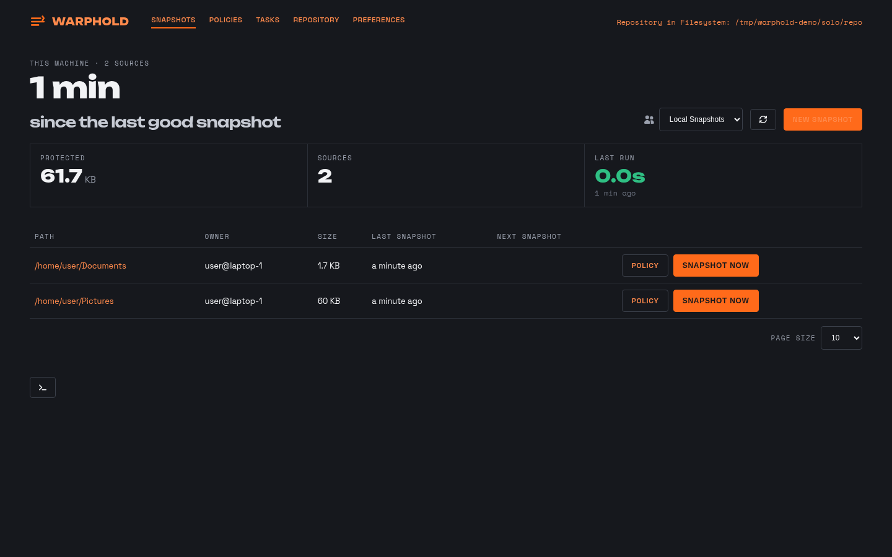
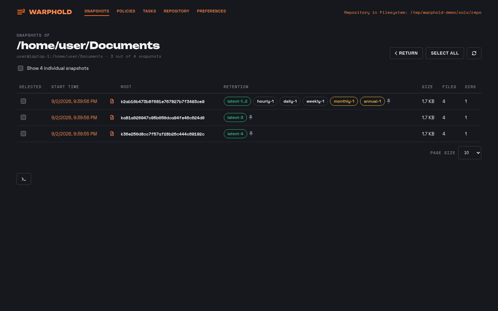
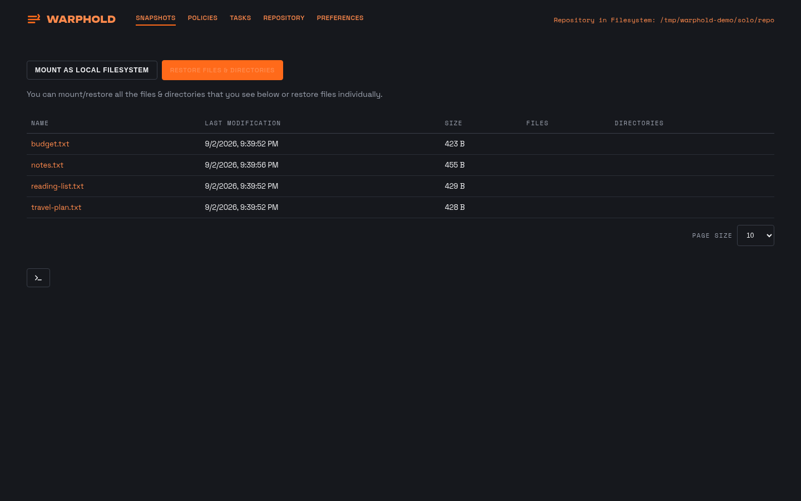
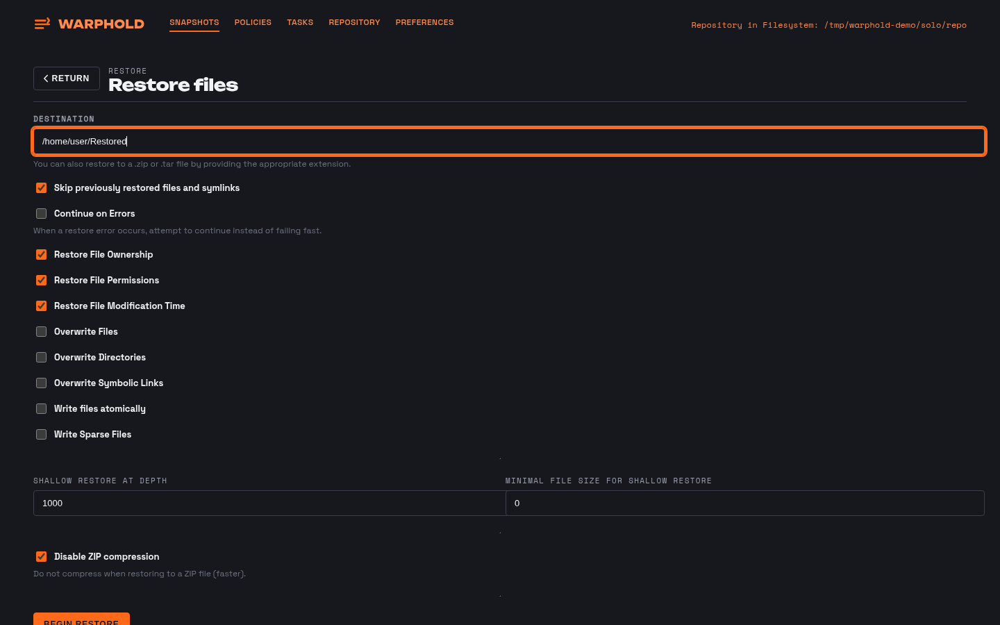
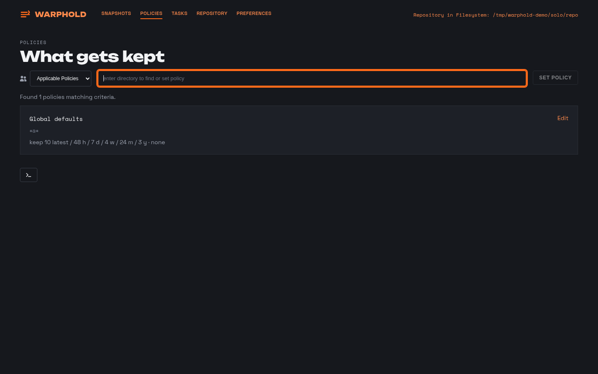
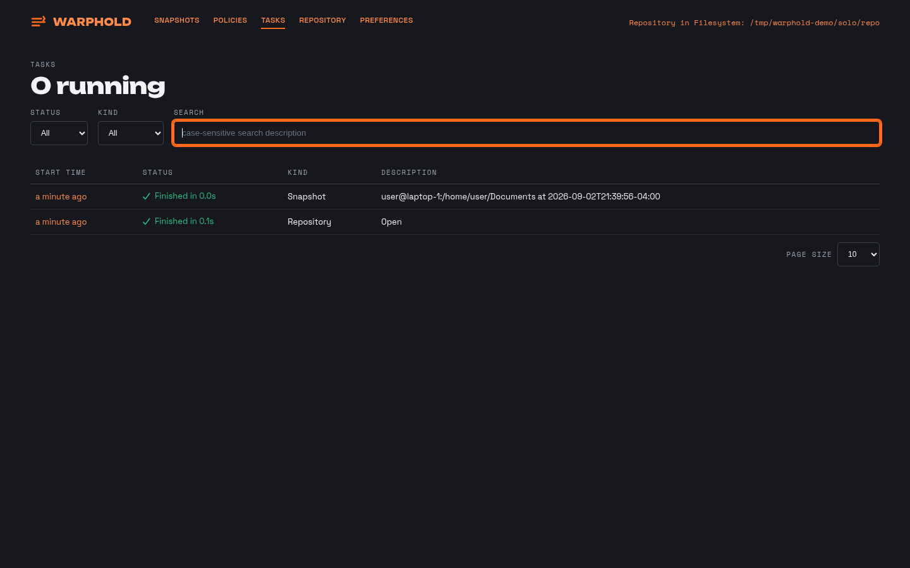
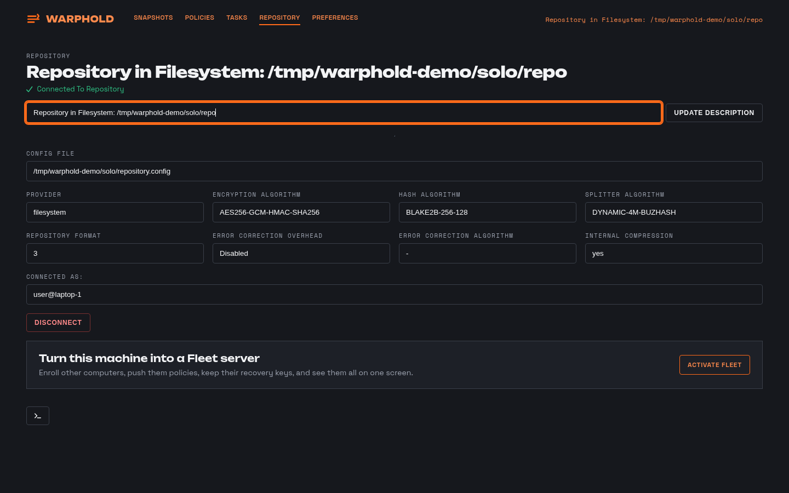

One machine · Linux
Backups that
hold
WarpHold backs up the files on this computer to storage you control — encrypted before they leave, and restorable years later with nothing but a stock Kopia binary.
Install
One command
Installs the binary, a user-scope engine service and the tray, then opens the app on this machine. Nothing is sent anywhere until you point it at a repository.
curl -fsSL https://get.warphold.com/app.sh | sh
Prefer a package? .deb and .rpm builds, with signed checksums, are on the
GitHub Releases page. Read
the script before you pipe it — it is a release asset in the same repository as the binary.
Snapshots
Every source, and when it last ran
The front page lists each directory this machine backs up, its last snapshot, its size and whether the last run succeeded. A source is a path plus a policy; you add one by pointing at a directory.

History and browse
Open any snapshot and look inside
Each source keeps its full history: every run, its size, how long it took and what changed. Open a snapshot and you browse it like a directory — no restore needed to see what was in it.


Restore
To a directory, an archive, or a mount
Restore a whole snapshot or a single file. Write it back where it came from, into a different directory, out to a .tar or .zip, or mount the snapshot read-only and copy what you need.

Policies
What you keep, how often, and what you leave out
A policy sets the schedule, the retention counts — hourly, daily, weekly, monthly, annual — the exclusion rules, and the compression and upload limits. Policies apply per source, per directory or globally, and each screen shows which level a value came from.

Tasks and repository
You can see what the engine is doing
Tasks lists every run the engine has started, finished or failed, with its log. The repository screen shows where your data goes, what it is protected by, and how much of it is stored.


Tray
Out of the way until it isn't
The tray icon carries the state of the last run: green when the last snapshot succeeded, amber when it is overdue, red when it failed. Click it for the last run, the next scheduled one, a Back up now item, and Details, which opens the app. It starts with your session and needs no root.
How it protects you
Four things, and no surprises
The engine runs here
Reading, hashing, packing and encryption all happen on this machine. There is no service in the middle that could read your files, because there is no service in the middle.
Encrypted before it leaves
Every content block and every piece of metadata is encrypted locally with your repository password. Storage sees opaque blobs with random names.
Deduplicated and incremental
Content-addressed blocks mean a file that has not changed is not uploaded again, and identical content anywhere in the source is stored once.
Restore without WarpHold
The repository format is Kopia's. Given the location, the password and a stock kopia binary you can list and restore every snapshot — no WarpHold, no account, no network service.
More than one machine?
Fleet backs up a household from one screen
Fleet is a small server you run yourself. Devices enroll with one command, each into its own isolated repository, and one dashboard shows whether every one of them is protected right now. See the Fleet tab.